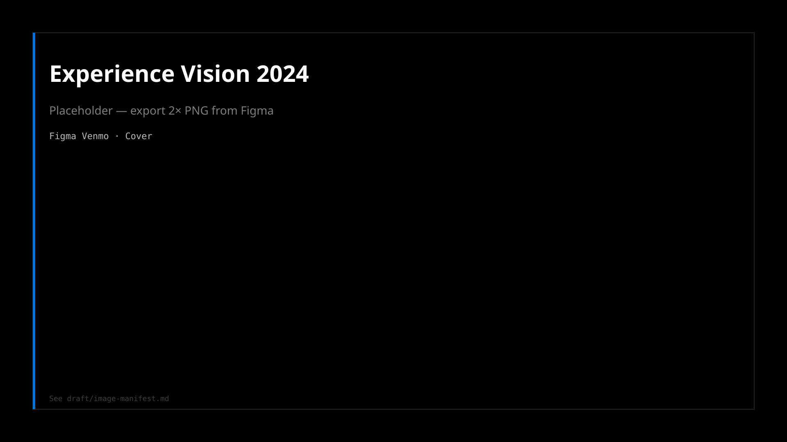
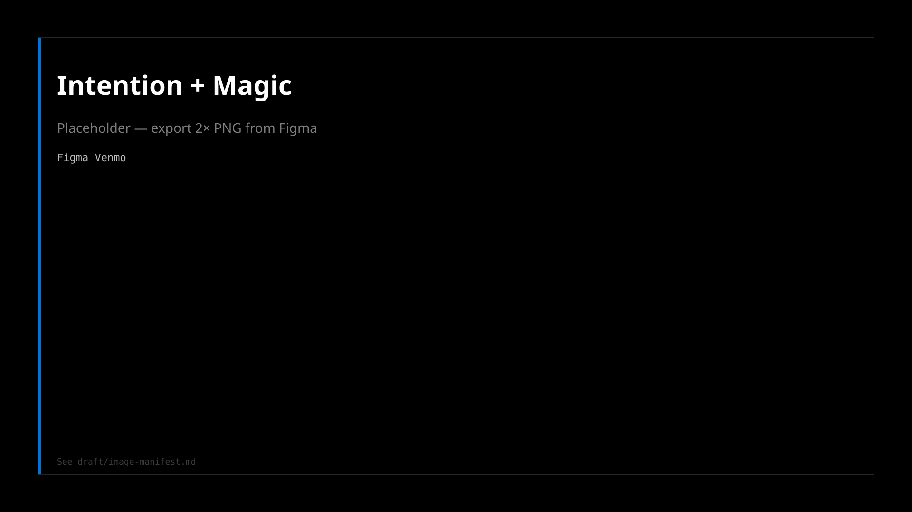
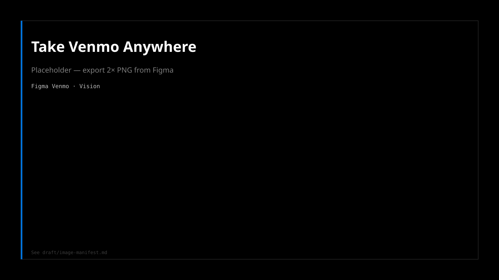
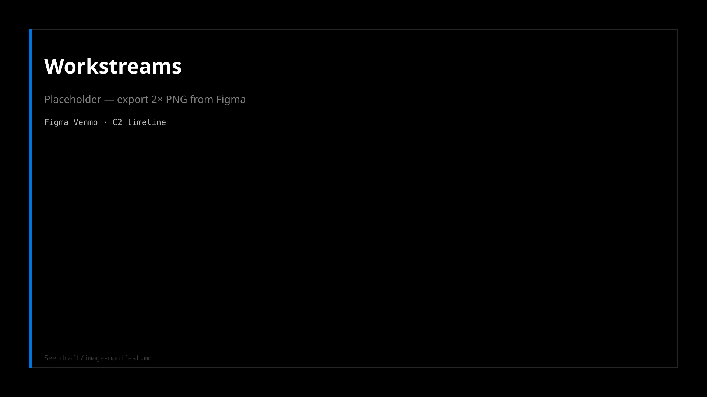
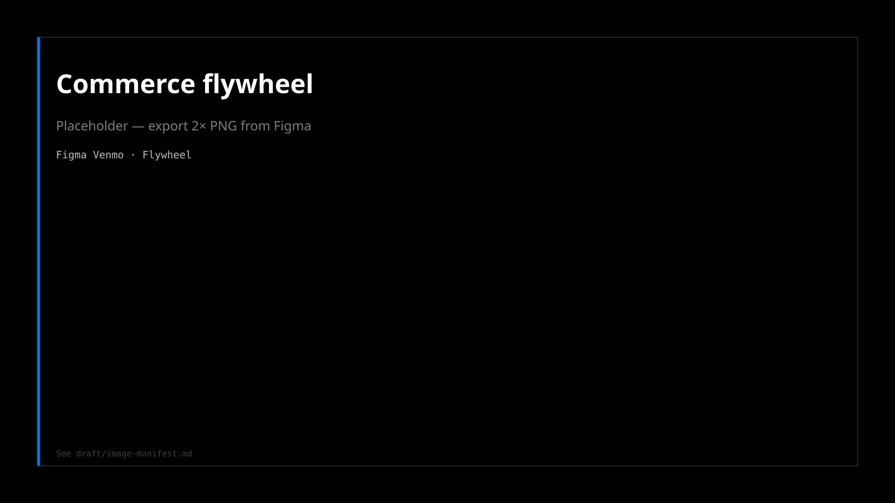

Project Nova
Firefox's 2026 redesign, in Nightly.
Read →
Venmo owned P2P social payments. The 2024 bet was bigger: build a cohesive target experience that moved OKRs forward without losing what makes Venmo feel like Venmo.
The product had to go from splitting bills with friends to building financial confidence across wallet, local commerce, and everyday money management in one trusted app.
From splitting bills to building financial confidence. Take Venmo Anywhere.

| Prop | What it meant |
|---|---|
| Celebrate our customers | Real-life moments (moving day, brunch, friendship), not abstract fintech |
| Make it simple and intuitive | Core flows and payment method selection stay effortless |
| Lead with the Venmo spirit | Social, warm, human. The brand is the experience |

| Workstream | Activities | Outcome |
|---|---|---|
| Product thinking | Triangulate data · Gen Z study · Stakeholder workshop | Refine JTBD |
| Benchmarking | Product teardowns · UI audit | Complete |
| Vision journey & principles | Storyboard · Sequence into 2024 priorities · Design system impact | SLT approval (Mar 2024) |


Slide exports wired via draft/image-manifest.md. Drop 2× PNG into site/assets/venmo/ to replace placeholders. No unreleased PayPal metrics on the public site.
More case studies